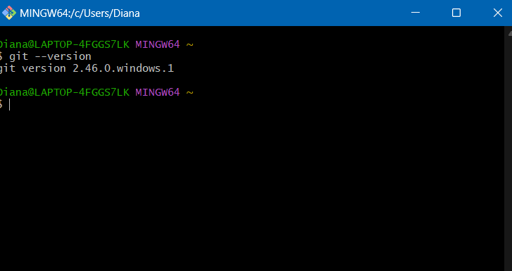

Introducción
Git es un sistema de control de versiones distribuido que te permite rastrear cambios en archivos y colaborar con otros desarrolladores.
Requisitos previos
- Un sistema operativo Windows (10 o superior recomendado).
- Acceso a Internet para descargar el instalador.
Pasos para la instalación
Paso 1: Descargar el instalador de Git
Visita la página oficial de Git: git-scm.com.

Paso 2: Ejecutar el instalador
Navega a la carpeta donde descargaste el instalador (usualmente en "Descargas").

Paso 3: Configurar la instalación
Selecciona el idioma, acepta la licencia, selecciona los componentes, etc.

Paso 4: Completar la instalación
Haz clic en "Finish" una vez que la instalación haya finalizado.

Verificar la instalación
Abre el "Símbolo del sistema" o "Git Bash" y escribe el siguiente comando:
git --versionEsto te mostrará la versión de Git instalada en tu sistema.
